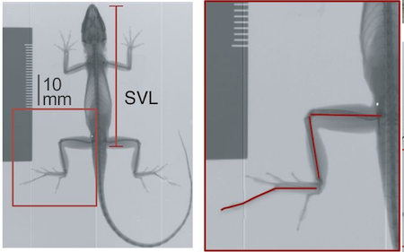
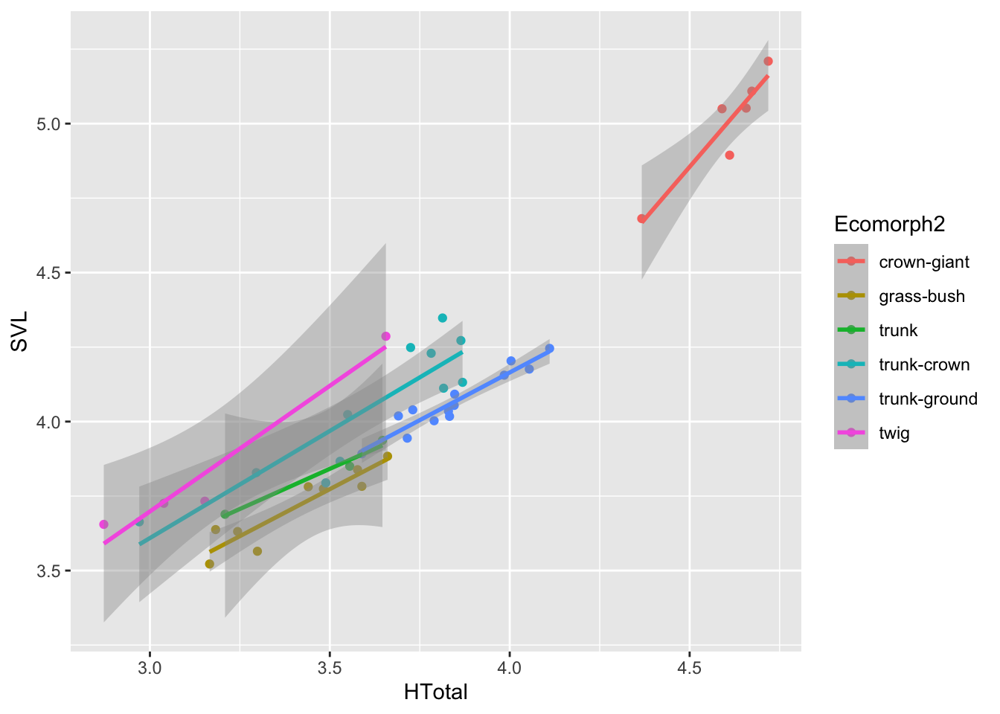
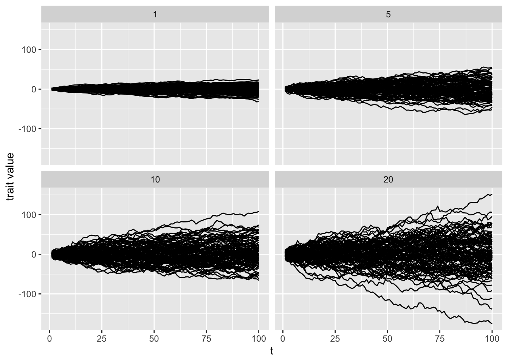
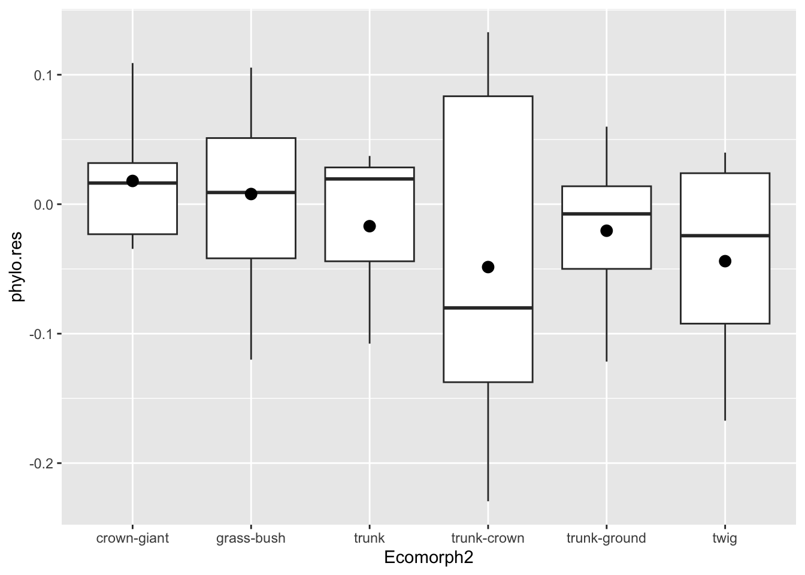
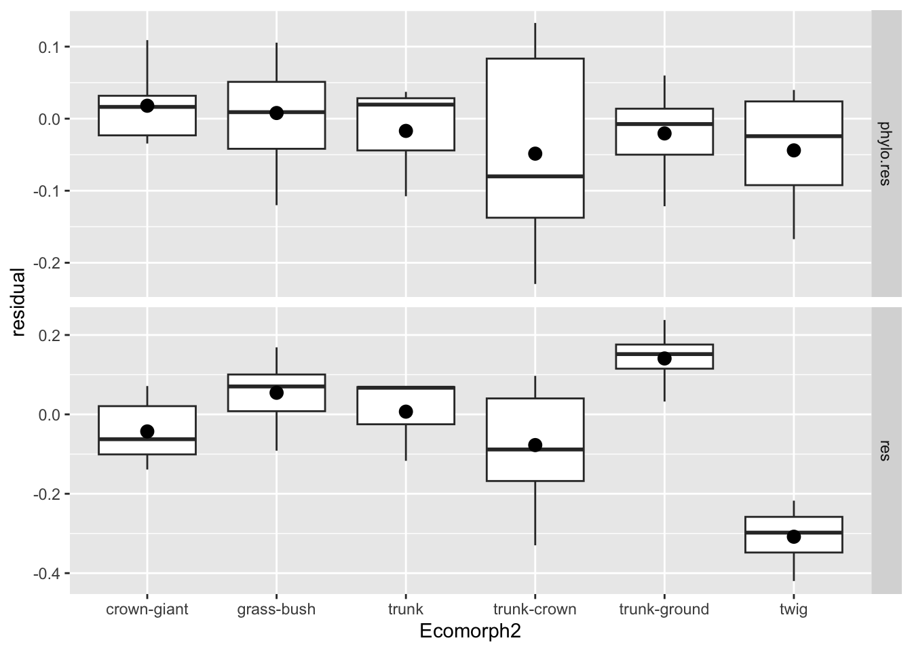

Module 3 Project
Introduction
After having learned the basics of working in R and using the
tidyverse to perform operations on data, we’ll now move on
to visualizing data and assessing assumptions (i.e., models) and
hypotheses (based on models) concerning our data. We’ll do so in the
context of the ecomorphology of anoles, an exceptionally
diverse genus of iguanian reptiles that comprises well over 400
species.
The central theme of this project will be to assess the morphological and allometric differences between ecomorphs within the genus Anolis. First coined by the famous evolutionary biologist and herpetologist Ernest Williams, the term ecomorph describes a group of species, perhaps not sharing a most recent common ancestor, with a similar ecological niche and behavior within the context of this niche. His model for this concept was the genus Anolis, although the ecomorph construct has been widely applied to many other species (think reef fish and Darwin’s Finches).

Our tasks will be to:
- Visualize how hind limb length varies with size (i.e., allometry!).
- Visualize and asses how hind limb length vs. size relationship covary with ecological niche.
- Learn more complex operations in
ggplotthan we’ve undertaken so far. - Evaluate this hindlimb-size relationship using standard frequentist models within and without a phylogenetic context.
- Using an information theory approach, assess the fit of phylogenetically corrected models of hind-limb variation under different modes of character evolution.
Set up
We have a few data sets that need to be downloaded:
- A file of morphological data from 46 species of anole.
- A file of ecomorphological data from the same 46 species.
- A tree file containing the phylogenetic relationships of these species.
The morphological and ecological data were retrieved from a recent study of allometry and ecomorphology of anoles (geckos, too) by Hagey et al. (2017). The tree data come from a study of the phylogenetic relationships of anoles by Poe et al. (2017).
As we have in the previous projects, let’s load the packages we need (make sure they’re downloaded!), then load these data and comment on the importance of it.
library(tidyverse) # Rember to load your libraries!
library(ape)
library(nlme)
library(geiger)
library(caper)
library(phytools)
library(viridis)
library(MuMIn)
#load data
anole <- read_csv("anole.dat.csv")
anole.eco <- read_csv("anole.eco.csv")The data loaded to anole are species
(Species), mean snout-vent length (SVL, length
between the snout and the vent, i.e., anus, a standard for reptiles),
and the mean total hind-limb length (HTotal). The figure
below from Lapiedra et al. (2018)
indicates how these measurements are taken on specimens of anoles.
[]
As with the main data set from the last project, this
anole data set doesn’t include important information about
the data, specifically from which ecomorph the data were taken. Thus, we
must merge the anole data tibble with the
anole.eco tibble and, simultaneously, do a few things
required for working with data in this context:
## Joining with `by = join_by(Species)`## # A tibble: 46 × 7
## Species SVL HTotal PH ArbPD Ecomorph Ecomorph2
## <chr> <dbl> <dbl> <dbl> <dbl> <chr> <chr>
## 1 Anolis_ahli 57.6 46.8 104. 8.5 TG trunk-ground
## 2 Anolis_aliniger 55.9 34.8 463. 18.6 TC trunk-crown
## 3 Anolis_allisoni 77.3 45.3 310. 12.1 TC trunk-crown
## 4 Anolis_allogus 54.8 44.2 128. 8.1 TG trunk-ground
## 5 Anolis_alutaceus 35.3 27.1 92.8 3.1 GB grass-bush
## 6 Anolis_angusticeps 41.5 20.9 309. 0.9 TW twig
## 7 Anolis_bahorucoensis 43.9 36.2 150 2.7 GB grass-bush
## 8 Anolis_barahonae 156. 105. 825 33 CG crown-giant
## 9 Anolis_brevirostris 47 35 102. 21.1 T trunk
## 10 Anolis_chlorocyanus 68.7 43.9 357. 10.6 TC trunk-crown
## # ℹ 36 more rowsNotice that, before the mutate operation, we filtered the data,
removing any rows is the tibble for which the Ecomoroph
value was “U” or “CH”. These are species for which the ecomorphological
designation was unique (“U”, i.e., unique to that species) or
Chamaeleolis, a subgenus of the genus Anolis that had
very few observations in the study. We use the filter()
function, asking it to keep any values in the Ecomorph
column that are not in c("U","CH") using
!.
Notice that we also omitted any rows of the tibble that had missing
values (i.e., NA) in any of the columns with
na.omit. That is, we only want to work with a complete data
set. We’ve saved this filtered tibble to a new name,
anole2
In the last operation, we have mutated our collective tibble
containing morphological and ecological data so that we changed our
columns containing size and ecological data to log transformations of
their values, each for SVL, HTotal,
PH and ArbPD. These are continuous data, i.e.,
they are not discrete and log transformation converts these data to
proportional representations. This will be important for both our
analysis of allometry and use in a phylogenetic comparative framework.
We did this with mutate_at, a function that allows us to
mutate columns in place, replacing each that we identify with the names
wrapped in c(). The second argument in
mutate_at specifies what we’ll do to the columns, in this
case log, the natural log (ln).
Why have we log-transformed our size and ecological data? This, from Luke Harmon’s -Harmon (2018) excellent book on phylogenetic comparative methods, explains why.
One general rule for continuous traits in biology is to carry out a log-transformation (usually natural log, base e, denoted ln) of your data before undertaking any analysis. This also applies to comparative data. There are two main reasons for this, one statistical and the other biological. The statistical reason is that many methods assume that variables follow normal distributions. One can observe that, in general, measurements of species’ traits have a distribution that is skewed to the right. A log-transformation will often result in trait distributions that are closer to normal. But why is this the case? The answer is related to the biological reason for log-transformation. When you log transform a variable, the new scale for that variable is a ratio scale, so that a certain differences between points reflects a constant ratio of the two numbers represented by the points. So, for example, if any two numbers are separated by 0.693 units on a natural log scale, one will be exactly two times the other. Ratio scales make sense for living things because it is usually percentage changes rather than absolute changes that matter. For example, a change in body size of 1 mm might matter a lot for a termite, but be irrelevant for an elephant; whereas a change in body size of 50% might be expected to matter for them both.
Visualizing Data, Forming and Refining Hypotheses
As we’ve learned in our readings of R4DS, before we undertake any
analysis of data, we must first visualize it so that we can begin to
evaluate what reasonable questions about the data set can be asked.
After that, we apply a model to see how best to describe the
relationships we care about. In the context of this project, we have
before us an important initial question: does hind limb length vary with
size? Let’s assess this initially by plotting hind limb length vs size
in anoles with ggplot. We’ll start with the untransformed
data set.
## `geom_smooth()` using formula = 'y ~ x'Remember from R4DS that we have to establish the aesthetic of the
plot and then add geometries with + to plot. Here we
established the aesthetic in aes() for our
ggplot as SVL for the x values and
HTotal for the y, then added two geometries, points and a
smooth line built on a linear model using method="lm". For
two continuous variables, a linear model is a good place to start. And,
as you see from the plot, the data look to have a linear relationship,
that is HTotal can be modeled as a linear response to
SVL or
\[Htotal=\alpha{\cdot}SVL+\beta\],
where, \(\alpha\) is the slope and \(\beta\) the y intercept.
Although the geom_smooth geometry adds predictions based
on this simple linear model and it looks to be a good fit, let’s
evaluate just how good this fit is with establishing a simple linear
model using the lm() function from the stats
package which loads automatically with R.
## (Intercept) SVL
## 4.005167 0.639719anole2%>%
ggplot(aes(SVL,HTotal))+geom_point()+geom_abline(slope=coef(anole.lm)[2],intercept=coef(anole.lm)[1],col="blue")Notice how the model is represented by the relationship
HTotal~SVL Using ~ is a standard convention in
R for model formulae where a variable to the left of ~ is
predicted by one or more variables to the right. So here where asking R
to build a linear model with HTotal predicted by
SVL. The second parameter specifies what data the variables
are coming from, in this case, anole2.
Now that we have our linear model, we can use this to predict
HTotal for a range of snout vent lengths rather than have
geom_smooth do it for us. Let’s do this by creating a
tibble with predictions:
SVL2 <- seq(min(anole2$SVL),max(anole2$SVL),0.1)
pred.lm <-tibble(
SVL=SVL2,
H.pred=predict(anole.lm,newdata = data.frame(SVL=SVL2))
)
anole2%>%
ggplot(aes(SVL,HTotal))+geom_point()+geom_point(data=pred.lm,aes(SVL,H.pred),col="blue")##
## Call:
## lm(formula = HTotal ~ SVL, data = anole2)
##
## Residuals:
## Min 1Q Median 3Q Max
## -11.8127 -4.6841 0.5629 4.0774 12.3424
##
## Coefficients:
## Estimate Std. Error t value Pr(>|t|)
## (Intercept) 4.00517 1.92790 2.077 0.0436 *
## SVL 0.63972 0.02585 24.751 <2e-16 ***
## ---
## Signif. codes: 0 '***' 0.001 '**' 0.01 '*' 0.05 '.' 0.1 ' ' 1
##
## Residual standard error: 6.251 on 44 degrees of freedom
## Multiple R-squared: 0.933, Adjusted R-squared: 0.9315
## F-statistic: 612.6 on 1 and 44 DF, p-value: < 2.2e-16From calling summary(anole.lm) we retrieved important
information about the model, including that the estimated response of
HTotal to SVL (i.e., the slope, a value of
0.63972) is a significant term at p<2e-16. With
summary(), we also retrieve the r squared value, the
percentage of the response variable variation that is explained by our
linear model. At 0.93, this model performs pretty well. However, maybe
data would fit another model at least as well.
Because we’re assessing how a variable relates to size, we should consider another model, a non-linear allometric one. Perhaps the icremental increase in hind-limb length decreases or increase with SVL, that is, the slope of this relationship is not stable with respect to SVL. Recall that an allometric model is a simple case of an exponential equation that, in this case, can be expressed thusly:
\[Htotal={\alpha\cdot}SVL^{\beta}\],
where \(\alpha\) is the intercept and \(\beta\) is the scaling exponent.
To express such a model in R, we can turn to non-linear least squares
with nls() from the stats package. Least
squares analysis is a standard approach in regression modeling which
approximates the relationship by minimizing the sum of the squares of
the residuals. In it’s simplest case, this is how the model in our basic
lm model is fit. In the case of non-linear least squares,
the model is fit based on a non-linear relationship, i.e., an equation
with the parameters \(\alpha\) and
\(\beta\). Thus we can fit an
allometric model with nls by:
##
## Formula: HTotal ~ a * SVL^b
##
## Parameters:
## Estimate Std. Error t value Pr(>|t|)
## b 0.91671 0.03246 28.238 < 2e-16 ***
## a 1.00548 0.14919 6.739 2.76e-08 ***
## ---
## Signif. codes: 0 '***' 0.001 '**' 0.01 '*' 0.05 '.' 0.1 ' ' 1
##
## Residual standard error: 6.102 on 44 degrees of freedom
##
## Number of iterations to convergence: 4
## Achieved convergence tolerance: 2.871e-06Notice that, unlike in the use of lm(), we must specify
starting values for parameters in our model with a list that’s specified
by start. With nls(), the function conducts a
search of the model parameter values to find those that reduce the sum
of squares of the residuals. The starting points here are estimated on
the basis that the scaling coefficient \(\beta\) will probably be around 1 because
the data fit a linear model pretty well and the intercept \(\alpha\) will be close to but not zero (a
reasonable assumption).
When we call the summary of our allometric model, we see that the
parameters a and b, \(\alpha\) and \(\beta\), respectively, are significant, so
both are likely explanatory parameters. But, how well do the data fit
our model? Is it a better fit than the lm() model? Well
this is tough to say. Notice that summary() doesn’t produce
an r squared value like it did for our simple linear model. This, for
tortuous reasons, is because it’s not
applicable to non-linear regression. So what to do?
Let’s go back to our readings in PCM, specifically, where the author,
Luke Harmon, points out that standard frequentist approaches to
comparative data are often limiting. The standard approach places a
premium on evaluating null hypotheses and finding p values that, if low,
reject the null, or if high, don’t reject it. In the context of what
we’ve covered so far, we’ve assessed the null hypothesis that
SVL has no effect on HTotal and rejected it
based on two statistical tests under different models, one linear, the
other allometric. This shouldn’t be a surprise: limbs get longer as
individual lizards grow longer . . . duh. But, this is only part of our
question: more than asking whether hind-limb length varies with size, we
also want to know whether it varies linearly or allometrically.
To answer this second part of the question, we must switch approaches and ask the question in a different way. Let’s first tackle this different way of asking our question. At first, we applied linear and non-linear models to the data and asked: “How well do my data fit the model? That is, specifically in the context of least-squares regression, how much do our points vary from the predictions of our models, i.e, what is the magnitude of the residuals? In both cases, the points in our data fit pretty well. However, this isn’t the question we really want to be asking. We’re asking which model fits out data best? See the difference?
To ask this question, we must take a different approach. As outlined in PCM, we could perform likelihood ratio tests. In this approach, we compare the likelihood of two nested models. The statistical property of likelihood is defined as the probability, given a model and a set of parameter values, of obtaining a particular set of data. Or, as Harmon put it, . . . “given a mathematical description of the world, what is the probability that we would see the actual data that we have collected?” This is the right approach for us—find the model, linear or allometric, with a higher likelihood of describing our morphological data better and therefore is a better mathematical approximation of the hindlimb-size relationship.
However, as we learned in PCM, likelihood ratio tests can only be used in limited cases, specifically to compare two models, one of which is a special case of the other. In other words, one model is exactly the same as the other, except that it is more complex, adding one or more parameters, which, in most cases means other independent variables. In our case, we don’t have nested models, but different model families all together—one linear, one allometric.
To compare models of most any type, nested or not, we have an alternative, the information theory approach. Specifically, we can use the Akaike Information Criterion (AIC). This description of the model fit compares the likelihood of the model against the number of parameters estimated. The AIC can be described as favoring the model that provides the best fit to the data with as few parameters as possible.
AIC is especially sensitive to sample size. Thus, another version of the AIC, one that penalizes models that have small sample sizes relative to the number of parameters, \(AIC_c\), is typically used in comparative biology.
Fortunately, from a few of our packages loaded above, we can compute the \(AIC_c\) of both of our models, then compare their fit. Additionally, we can calculate the relative support of each model using AIC weights (\(AIC_w\)).
#AICc from the MuMIn package
anole.aic <- AICc(anole.lm,anole.allo)
#aicw from the geiger package
anole.aicw <- aicw(anole.aic$AICc)
print(anole.aicw)## fit delta w
## 1 303.6785 2.220885 0.2477884
## 2 301.4576 0.000000 0.7522116From our anole.aic, we see that the second model,
anole.allo has a lower AIC score, and lower scores
indicate a better fit. Although the relative fit is three times
better for our allometric model, the difference in \(AIC_c\) is somewhat small (\(\Delta AIC\)=2.2). A general rule of thumb
is that a \(\Delta AIC\) of less the 4
indicates roughly equivalent models, 4–8 little support for a lesser
fit, and over 10 a poor fit and the model can be ignored. So, because we
have \(\Delta AIC\)<4, there’s
little difference between our linear and allometric models of hind-limb
growth; thus, we can say that allometry and isometry are roughly
equivalent models. This was almost expected given that, after
that calling summary(anole.allo) we see that the estimate
for b the scaling exponent, is pretty close to 1 at b
0.92.
You might be wondering, “If both the allometric and linear models
have the same number of parameters (both have SVL and two
other parameters), why not just look at the likelihood?” We can
certainly do that:
## 'log Lik.' -148.5536 (df=3)## 'log Lik.' -147.4431 (df=3)Here, the allometric model has the highest likelihood and, because the models have the same number of parameters, is the model that fits best.
More Complex Visualizations and Models
So now that we understand the basics of visualizing data, applying models, and choosing which fit our data best, let’s consider a more complicated relationship among our data. Specifically, we’ll consider the effect of ecomorph on the hindlimb-SVL relationships.
For this we’ll use our log-transformed data for the reasons outlined
in the note above. We’ll begin by visualizing hindlimb-SVL relationships
for each ecomorph in ggplot:
## `geom_smooth()` using formula = 'y ~ x'
Most of what we did here should be rather familiar by now. We passed
our log-transformed data with the pipe to a ggplot call,
specifying SVL for the x values and HTotal for
the y, then added point and line (of type "lm") geometries
to the plot. Notice that we added another argument to the
aes of the ggplot, specifically
col=Ecomorph2. This colors all the added geometries
according to the column values in Ecomorph2, a longer
description of ecomorph than the abbreviations one
Ecomorph. In addition, this establishes groups of data to
compute multiple regression lines for `geom_smooth()’.
By plotting out data in this way, it’s clear we should consider ecomorph as an important variable explaining the hindlimb-SVL relationship. So let’s now construct a model that includes this new variable:
##
## Call:
## lm(formula = HTotal ~ SVL * Ecomorph2, data = anole.log)
##
## Residuals:
## Min 1Q Median 3Q Max
## -0.217726 -0.037365 -0.000631 0.038581 0.166699
##
## Coefficients:
## Estimate Std. Error t value Pr(>|t|)
## (Intercept) 1.4853 1.0542 1.409 0.16794
## SVL 0.6236 0.2108 2.959 0.00559 **
## Ecomorph2grass-bush -3.1628 1.3919 -2.272 0.02951 *
## Ecomorph2trunk -4.9438 2.1623 -2.286 0.02859 *
## Ecomorph2trunk-crown -2.3199 1.1646 -1.992 0.05445 .
## Ecomorph2trunk-ground -3.3900 1.4537 -2.332 0.02576 *
## Ecomorph2twig -2.6170 1.2480 -2.097 0.04351 *
## SVL:Ecomorph2grass-bush 0.7451 0.3229 2.308 0.02724 *
## SVL:Ecomorph2trunk 1.1876 0.5365 2.214 0.03365 *
## SVL:Ecomorph2trunk-crown 0.4744 0.2436 1.948 0.05972 .
## SVL:Ecomorph2trunk-ground 0.7907 0.3239 2.441 0.02001 *
## SVL:Ecomorph2twig 0.4963 0.2727 1.820 0.07763 .
## ---
## Signif. codes: 0 '***' 0.001 '**' 0.01 '*' 0.05 '.' 0.1 ' ' 1
##
## Residual standard error: 0.08786 on 34 degrees of freedom
## Multiple R-squared: 0.9713, Adjusted R-squared: 0.962
## F-statistic: 104.7 on 11 and 34 DF, p-value: < 2.2e-16## Analysis of Variance Table
##
## Response: HTotal
## Df Sum Sq Mean Sq F value Pr(>F)
## SVL 1 8.0567 8.0567 1043.7025 < 2.2e-16 ***
## Ecomorph2 5 0.7560 0.1512 19.5880 3.761e-09 ***
## SVL:Ecomorph2 5 0.0772 0.0154 2.0009 0.1035
## Residuals 34 0.2625 0.0077
## ---
## Signif. codes: 0 '***' 0.001 '**' 0.01 '*' 0.05 '.' 0.1 ' ' 1Notice that we performed an ANOVA test on our new model with the
anova() function. This is, more precisely defined, a
two-way analysis of covariance. That is, we are assessing the effect of
a categorical variable (Ecomorph2) in the context of how
HTotal covaries with SVL. The results
of the ANOVA indicates that we should reject the null hypothesis that
ecomorph groups do not have separate hindlimb-SVL relationships. This is
indicated by the p=3.761e-09 for the Ecomorph2 variable
Great! We now have established that ecomorph has a significant effect
on the hindlimb-SVL relationship. But, to come back to our readings in
PCM and what we discussed above, although this model may have some
significant terms, we really want to know if adding the
Ecomorph2 parameter results in a better fit as compared to
a simple model that doesn’t include this parameter. Put another way, is
a model of hindlimb growth that includes ecomorph describing the system
better than one that doesn’t? Let’s establish this simple model with
log-transformed data and compare it with AIC and AICw to this more
complicated model.
## Analysis of Variance Table
##
## Response: HTotal
## Df Sum Sq Mean Sq F value Pr(>F)
## SVL 1 8.0567 8.0567 323.53 < 2.2e-16 ***
## Residuals 44 1.0957 0.0249
## ---
## Signif. codes: 0 '***' 0.001 '**' 0.01 '*' 0.05 '.' 0.1 ' ' 1## fit delta w
## 1 -34.79896 34.93394 2.595324e-08
## 2 -69.73290 0.00000 1.000000e+00Notice that we added our Ecomorph2 variable to the model
with * in our model formula:
HTotal~SVL*Ecomorph2. This could have been done with
+, but the difference between * and
+ is huge. The symbol + adds this variable to
model and asks the regression to consider if only the intercepts of the
groups within Ecomorph2 will vary, that is, if the mean
response of HTotal vs. SVL is different
according to the groups in Ecomorph2. The *
adds an interaction between terms in the model. This asks the regression
to consider if the slopes of HTotal
vs. SVL is different according to the groups in
Ecomorph2. Put another way, SVL*Ecomorph2
considers if HTotal responds differently to
SVL according to Ecomorph2 This is a good
place to start, assuming that different ecological groups have different
relationship between the response and the covariate.
OK, yes! A model with the added Ecomorph2 parameter
results in a much better fit, both in terms of \(\Delta AIC\) and AIC\(_w\).
Now that we’ve found a better fitting model, let’s explore just how
much each ecomorph varies among anoles in their hindlimb-SVL
relationship. Think for a second or two how we might go about this. Our
problem is a multivariate one: we have the covariaton of
HTotal vs. SVL to consider in the context of
ecomorph. As we’ve learned, visualization is the most important first
step of data analysis. But, how should we represent these data in a
plot?
Let’s come back to the residual. The residual represents how much any
one data point varies from the prediction. If we have a global model
that predicts thehindlimb length based on SVL for all our anole species,
we can determine how much each species deviates from the prediction. We
can then take the residuals for each species and look for patterns by
plotting the residuals versus ecomorph. That is, we need to go beyond
plotting points and regressions and plot data based on a categorical
values (in this case, Ecomorph2). This is easily
implemented in ggplot.
First we need to compute the residuals based on our global
anole.log.lm model:
For this, we use the residuals() function from the
stats package, computing residuals for the
anole.log.lm model. Notice that we used a
mutate() operation to establish a new res
column that contains the residuals. Notice that we also redefined
anole.log as a tibble containing this new column. Now,
let’s plot the residuals against Ecomorph2.
In this ggplot() operation, we established the x
variable as Ecomorph2 and y as the residual
(res).
From this we see that model deviations (i.e., residuals) are greatest
in the twig and trunk-ground ecomorphs. But, this isn’t so pleasing.
Perhaps we would like a better summarization of the data, including the
median residual for each ecomorph. We could do this with more mutations
of the data; however, we can let ggplot do this with
geom_boxplot(). This geometry plots summary statistics
including the median, hinges that correspond to the first and third
quartiles, and whiskers that correspond to 1.5 times the interquartile
range.
This is a great summary of our hindlimb-SVL residual data according
to ecomorph. But, often, as biologists, we prefer to visualize the mean
of values in our a priori groups rather than median. One asset of
ggplot is that we can add geometries to existing plot.
Because we saved out plot as p.eco, we can simply add a
geometry that includes a representation of mean residual for each
ecomorph.
Here we added a point with the stat_summary() geometry.
This applies a summarizing function to the already established group
(established by x=Ecomorph2) and plots the value of the
summary with a specified geometry. The function we applied to the y data
is the mean (fun=mean) and we specified a point with size 3
for the geometry to add (geom=point and
size=3, respectively). Lovely.
Not So Fast: Phylogeny Matters
So far we’ve concluded that ecomorph is an important explanatory variable when it comes to anole hinglimb-SVL relationships. But (and this is the biggest of buts), we’ve ignored an important and potentially confounding fact. These lizards, like every group of organisms, have an evolutionary history. Because of this, some species are more closely related than others and thus, they cannot be seen as independent samples in the statistical sense. In other words, any trait we seek to study likely covaries with phylogenetic position. For example, in the context of anole hindlimb-SVL data, it is entirely possible, perhaps probable, that more closely related species share a similar pattern. Thus, it may be that any patterns we’ve uncovered thus far are the result of phylogeny, not merely ecomorph alone.
To account for phylogeny in statistical analysis, we must turn to an important toolbox used by organismal biologists, phylogenetic comparative methods (PCMs). PCMs have a long history and today they are defined as any statistical operations that include the use of phylogenies, that is, information from phylogenetic trees. For regression analysis, the modeling approach we’ve taken on in this project, there exist several PCM procedures that account for phylogeny. Phylogenetic generalized least squares (PGLS) is perhaps the most flexible and widely used among them.
In typical least squares regression operations performed already, the residuals of any relationship are assumed to be independent and normally distributed. In PGLS, the variance and covariance of the residuals are structured given a model of trait and the closeness of relationships in a phylogenetic tree. So to perform PGLS, we establish this covriation matrix with a tree and assume that the characters have evolved in this tree under some evolutionary model.
Let’s first have a look at the tree.
Here we read in the tree using read.tree from the
ape package. This stores the tree as a phylo
object, a list of branch order, branch lengths, and tip labels. We’ll
use the phylo object in our analysis. One can plot
phylo objects with the plot() function. We
added cex=0.4. cex stands for the character
expansion factor—-how the size of the text should be adjusted. In this
case, the tip label (i.e., species names) are too cluttered if we don’t
reduce the character size to 0.4 of the default.
Now that we have a tree that we’ll use in our PGLS regression analysis, let’s consider what we mean by an evolutionary model. By this we mean under what process or mode does a trait (or several) evolve over a tree, from the root to the tips. Many PCMs assume a Brownian motion model of character evolution. You can think of this as a “random-walk” process. At each point in time, the value of the character walks higher or lower from the previous value. Over time, the sum of these changes describes the change in the value. How much the value can change over time is described by the rate parameter \(\sigma^2\)—the higher the value, the greater the changes at each point in time. To illustrate the random-walk nature of this process and the effect of \(\sigma^2\) on the magnitude of change over time, consider the following 4 simulations each with a 100 simulations with different value of \(\sigma^2\) ranging from 1 to 20:

Notice, as Harmon pointed out in hist PCM book, this resembles a genetic drift model and indeed BM can be used to model a process of trait evolution under genetic drift.
In PGLS, or any number of other comparative methods, we can implement this model of character evolution over the tree where time corresponds to the branch lengths and each node of the tree represents a new random walk away from the previous value at the previous node. This from Harmon’s PCM book explains the process:
In A, we see the evolution in a single lineage over time period \(t_1\). At the end of time \(t_1\), the trait will have evolved value \(\bar{z}(t_1)\), a magnitude that is approximated by \(\bar{z}(0)\) plus the amount of change along the branch (roughly described by \(\sigma^2t_1\), the product of the rate parameter and time). In panel B,the evolutionary change described by Brownian motion occurs over a total time of \(t_41\)+\(t_2\). Thus, the change at this tip (\(\bar{x}_a\)) would be equal to the starting value, \(\bar{z}(0)\) plus \(\sigma^2(t_1+t_2)\). Similarly, the change at tip “b” would be equal to \(\bar{z}(0)\) + \(\sigma^2(t_1+t_3)\). Note that the mean value for tips “a” and “b” (\(\bar{x}_a\)) and \(\bar{x}_b\)) are not independent: the two tips share a branch in common and each tip’s trait value is the ancestral value plus the sum of two separate evolutionary changes. In a more complex tree with many taxa, this process is modeled from the root (the ancestor or all species) to every tip.
Another way to model character evolution over a tree, an Ornstein-Uhlenbeck (OU) model, is a little more complicated, however, worth mentioning because it remains a popular alternative model to the BM process. We won’t go into the same detail because of its similarity to BM and the mathematics are somewhat involved. In this model, traits evolving over a tree are “pulled” toward an optimum and this is often assumed to model a process of stabilizing selection (although other processes the result in optima can’t be ruled out). The process of fitting an OU model is quite similar to BM including a starting value (\(\bar{z}(0)\)), the evolutionary rate \(\sigma^2\), and the additional parameters of the trait optimum (\(\theta\)) and strength of selection (\(\alpha\)). The \(\alpha\) parameter determines how strongly the trait is pulled back to the optimum and, for this reason, is sometimes referred to as a “rubber band” parameter. It’s important to note that when \(\alpha\)=0, i.e., no selection, the OU is mechanistically identical to the BM process.
Now that we have explained the theory behind a few evolutionary
models and we have a tree for our anoles, let’s perform some PGLS under
these two different models: both with simple regression models that
doesn’t include ecomorph and then models that do. We’ll start with
setting up the code using gls() from the nlme
package and then discuss what’s in it.
#PGLS under BM, no ecomorph
pgls.BM1 <- gls(HTotal ~SVL, correlation = corBrownian(1,phy = anole.tree,form=~Species),data = anole.log, method = "ML")
#PGLS under BM, w ecomorph
pgls.BM2 <- gls(HTotal ~SVL * Ecomorph2, correlation = corBrownian(1,phy = anole.tree,form=~Species),data = anole.log, method = "ML")
#PGLS under OU, no ecomorph
pgls.OU1 <- gls(HTotal ~SVL, correlation = corMartins(0,phy = anole.tree,form=~Species),data = anole.log, method = "ML")
#PGLS under OU, w, ecomorph
pgls.OU2 <- gls(HTotal ~SVL * Ecomorph2, correlation = corMartins(0,phy = anole.tree,form=~Species),data = anole.log, method = "ML")What we did here is set up generalized least squares models that
establish a correlation matrix based on BM and OU models of evolution.
We establish this matrix with corBrownian() from the
ape package for the BM models and
corMartins(), also from ape, for the OU
models. The corMartins() function for establishing the OU
covariation matrix is so name by the ape authors as an
homage to Martins and Hansen (1997), the
paper that most precisely defined the OU model in comparative analysis
[see note below]. Notice that we don’t have to specify what any of the
parameters are; they are estimated under maximum likelihood when
method=ML. For the BM model, we used a stating starting
value of 1 for \(\sigma^2\) and for the
OU model we used a starting value of 0 for \(\alpha\). In each correlation function, we
have to specify the tree (anole.tree) and the column names
in data that will form the covariation matrix, that is, species
(~Species).
The field of phylogenetic comparative methods, like the discipline of biology as a whole, is remarkably white and especially male. Yet, several woman have made important contributions to comparative methods. Emilia Martins, a computational mastermind and lead author in Martins and Hansen (1997), is one of these distinctive female scientist who has contributed so profoundly to the field.
Now that we have our models, we can preform our AIC operations to see which models fit that data best:
## fit delta w
## 1 -63.66118 29.319176 4.225281e-07
## 2 -92.98036 0.000000 9.827289e-01
## 3 -57.31864 35.661714 1.772520e-08
## 4 -84.89770 8.082653 1.727062e-02From the AIC results, we con safely say that a phyloggnetically
corrected regression model that includes Ecomorph2 with
traits evolving under BM is the best fit. The OU models that specify a
pull to some global optimum are rejected. We can interpret this to mean
that the traits have evolved randomly, but randomly within each
lineage.
Next, we can now consider whether Ecomorph is a
significant factor in predicting the hinglimb-SVL relationship in a
phylogenetic context by preforming an ANOVA on our best fitting model,
pgsl.BM2
## Denom. DF: 34
## numDF F-value p-value
## (Intercept) 1 15848.498 <.0001
## SVL 1 1073.374 <.0001
## Ecomorph2 5 16.731 <.0001
## SVL:Ecomorph2 5 1.596 0.1878Like our simple linear model, this variable remains significant:
Ecomorph2 has a significant effect on this relationship at
p<0.0001. However, if we dig deeper with some visualization, we see
that ecomorph isn’t as strong as a factor when we consider phylogeny.
Let’s come back to the residuals of our hinglimb-SVL relationship, but
now we’ll consider BM evolution of this relationship over the tree.
We’ll first mutate and redefine our anole.log data to
include a column for phylogenetically corrected residuals and
then plot them against ecomorph just as we did in the case of our simple
lm() model that didn’t consider phylogeny:
anole.log <- anole.log%>%
mutate(phylo.res=residuals(pgls.BM2))
p.eco.phylo <- anole.log%>%
ggplot(aes(x=Ecomorph2,y=phylo.res)) +geom_boxplot() +stat_summary(fun=mean, geom="point", size=3)
print(p.eco.phylo)
Plotting More with Less
Now that we have phylogentically corrected residuals in addition to
the uncorrected residuals, let’s now compare them visually. To do this
we could use ggplot() to plot two separate boxplots of the
uncorrected and corrected residuals. But, this wouldn’t be very concise.
What we’ll do instead is make the anole.log tibble longer
with respect to the two types of residuals. Think back to the last project where
we made a tibble wider. In that case, we had a column of fin
amplitudes (both left and right) and another identifying from which fin
the amplitude came. With respect to fin amplitude, this is a long table,
and we modified it to wide format with separate columns of values, one
for each fin amplitude. In our anole.log tibble, we now
have this wide format, a column for each type of residual. If we can
make this tibble longer, with a column of both residual values and
another identifying to which type of residual the value belongs, we can
you ggplot()’s handy faceting tools to include our boxplots
of both residual types in one plot.
In the previous project, we introduced the concept of
facets. If you recall, facets are used to break the plot up into a
grid according values in the data. Let’s massage the data to a longer
format and then use a faceting function from ggplot to plot
the phlyognetically corrected and uncorrected residuals against ecomorph
with a boxplot. This is how it can be done:
anole.log%>%
dplyr::select(Ecomorph2,res,phylo.res)%>%
pivot_longer(cols=c("res","phylo.res"))%>%
print%>%
ggplot(aes(x=Ecomorph2,y=value)) +geom_boxplot() +stat_summary(fun=mean, geom="point", size=3)+facet_grid(name~.,scales = "free_y")+ylab("residual")## # A tibble: 92 × 3
## Ecomorph2 name value
## <chr> <chr> <dbl>
## 1 trunk-ground res 0.152
## 2 trunk-ground phylo.res -0.00747
## 3 trunk-crown res -0.113
## 4 trunk-crown phylo.res -0.0801
## 5 trunk-crown res -0.176
## 6 trunk-crown phylo.res -0.203
## 7 trunk-ground res 0.148
## 8 trunk-ground phylo.res -0.00357
## 9 grass-bush res 0.0980
## 10 grass-bush phylo.res 0.0868
## # ℹ 82 more rows
Here we selected the three columns of interest
(Ecomorph2, res [the uncorrected residual],
and phylo.res [the phylogenetically corrected residual]) in
anole.log and passed that to a pivoting function,
pivot_longer(). We specified the columns that will make the
tibble longer with cols=c("res","phylo.res").
pivot_longer() constructed two new columns: one of both
these values and another indicating the names of the column from whence
they came. print was included so that we can see how this
works. Notice the Ecomorph2 column remains and now, rather
than separate columns for the values of the residuals, their in a single
column value and these values are identified by the
name column. In other words, for each entry of an
individual ecomorph in our tibble, there’s now two types of residuals
identified by name, along with their values in value.
Notice that the select() function in the code above is
prefaced with dplyr::. This is R speak for “use the
function select from the dplyr package.” We
have to do this here because a few of the other packages we loaded also
have different functions of the same name. A common lament of folks
writing code for other folks to use (i.e., packages) is that the
toughest part of the work is naming things. That is, one has to be
careful.
All we had to do from there to plot a boxplot of both residuals for
each ecomorph was borrow our boxplot code from above, modifying it a bit
to produce the facets. Now, rather than having the y values equal
res or phylo.res, we have it equal
value in our tibble, a column that reflects values for both
types of residuals in our new tibble. Once we add
facet_grid() to the plot, with name~., we get
each type of residual plotted as a boxplot against ecomorph in a
separate row. Recall that function takes a formula as input which
corresponds to “row facets ~ column facets”, that is, what should the
rows and columns in the grid represent. So, we want each of the
different values according to name (the type of residual),
boxplotted in a different row, thus name~.. The
. tells the facets not to worry about columns as we don’t
have any additional patterns to plot in the columns. Notice that the
facet rows in the plot are name with the values unique values in the
name column.
We also added scales="free_y" to
facet_grid(). This allows the scale on the y axis to be
different in each row. As you can see, the scales of the residuals is
much less expansive for the phylogentically residuals than for the
uncorrected residuals. Without this, the boxes (hinges, whiskers, etc.)
would be indistinguishable for the phylgentically corrected values.
Lastly, we added a new label to the y axis with ylab()
to provide a more appropriate name than “value”.
Let’s come back to the comparison of the two types of residuals. With our faceted plot before us, we can see that the residuals condense quite a bit when we consider phylogeny. In other words, there was quite a bit of phylogenetic signal in our hindlimb-SVL data. Notice as well when we consider phylogeny, the patterns of which groups vary substantially changes a lot. Take, for instance, the trunk-ground ecomorph: it no longer has such a high mean residual, but is rather pretty close to the phylogenetically corrected mean for anoles. That is, compared to all the other anoles, it’s a rather unremarkable group in terms of relative hindlimb size.
Project Report
It’s likely that your head is spinning: we’ve covered a ton of topics in the project. What’s left to do is merely pick up the high points of what we’ve explored and apply these in a few relatively straightforward operations.
Let’s have your team explore some ecological data and how it effects
hindlimb-SVL patterns. We’ll not take the a priori ecomorph designations
for granted, but rather assess if important ecological parameters of
perch height (how high in the tree the anole resides) and the diameter
of the perch predicts discrete patterns in the hindlimb-SVL
relationship. We’ll use the log-transformed values of these variables
that are contained in the anole.log tibble.
For this project report, write a script named “groupname_module3.R” and undertake the following operations.
- Combine the code above so that you can establish the
anole.logdata tibble. - Using the log-transformed data, construct two simple linear models
that assess the effect of perch diameter and height by including these
as covariates in your models. Be sure to use
+notation rather than*, assuming there is no interaction (there isn’t, trust me!). - Explore how both perch diameter and height effect the hindlimb-SVL relationship by plotting the residuals of your simple linear models against these discrete factors. This will require mutating a data tibble to include residuals from both models. Please produce two separate plots.
- Under a BM model of trait evolution and using the tree provided, construct phylogenetic least squares models of the hindlimb-SVL relationships that include the unique combinations of these two covariates, i.e,
* A PGLS model with the hindlimb-SVL relationship + perch height
* A PGLS model with the hindlimb-SVL relationship + perch diameter
* A PGSL model with the hindlimb-SVL relationship + perch height + perch diameter- Assess the fit of each of these three models using AICc and AICw and comment on (with comments in the script) whether one or both of the covariates is a significant predictor of hinglimb length in a phylogenetic context.
- Produce a plot of your own design that concisely visualizes the effect of your covariate(s) and factors (i.e., ecomorph) on the hindlimb residuals of the best fitting PGLS model.
- Commit your script to your group repository.
NB: Please number your operations with a comment to identify which of these prompts you’re addressing, e.g. . .
#1 establishing the data tibble
dat <- dat%>%
left_join(dat2)
#2 the two linear models
lm.PH <- lm(HL~PH,dat)
lm.PD <- lm(HL~PD,dat)
#etc., etc.Submissions are due by 11:59 PM on Tuesday, September 27th.